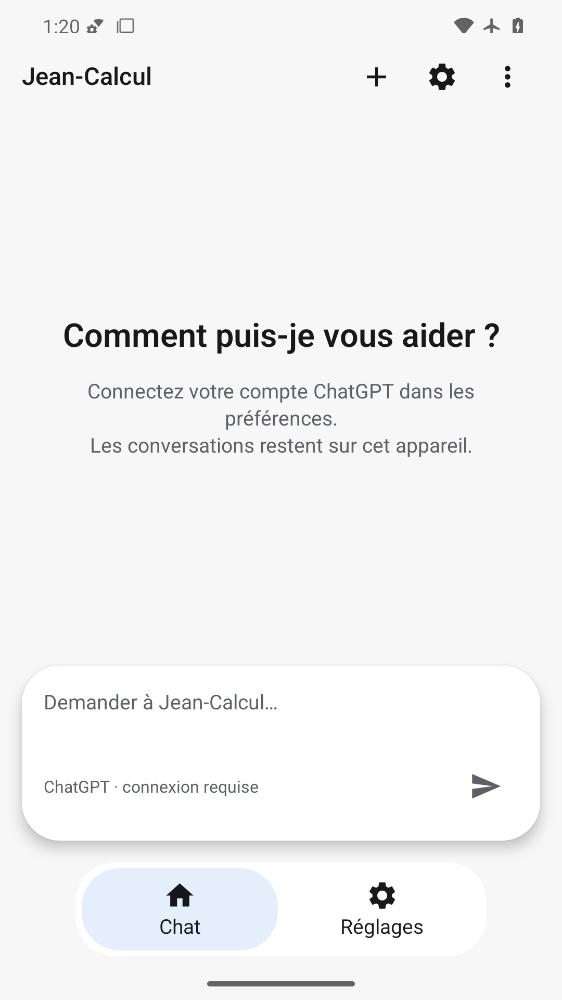
Accueil indique de connecter le compte ChatGPT ; capsule affiche connexion requise. Titre, trois actions et navigation visibles, aucune réponse inventée.
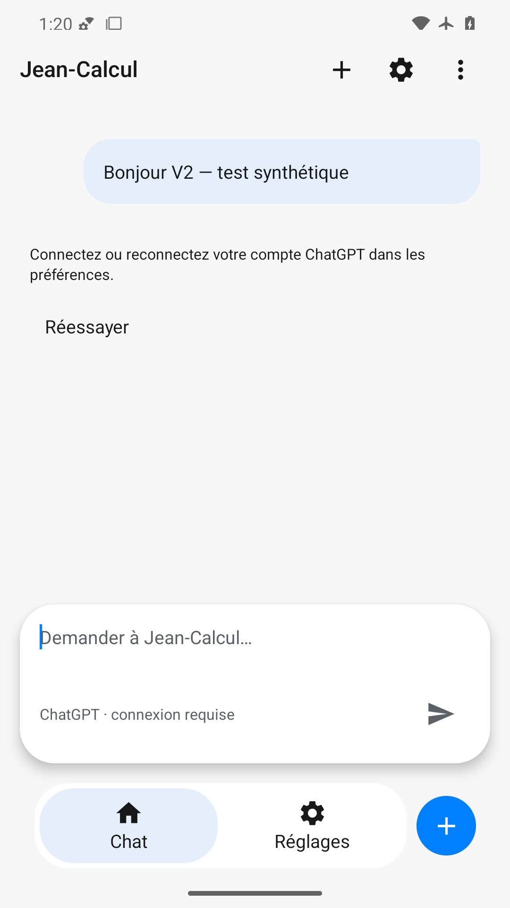
Message synthétique conservé, erreur réelle de connexion ChatGPT sur deux lignes et action Réessayer lisibles ; pas de bulle entrante fictive.

Après effacement, accueil et saisie vide rétablis, ancien message absent et navigation Chat conservée.
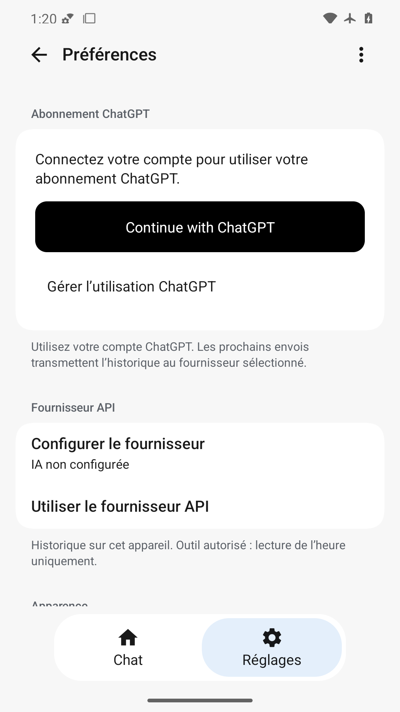
Groupe Abonnement ChatGPT en premier, bouton noir Continue with ChatGPT lisible et action Gérer l’utilisation visible. Le fournisseur API est une option distincte plus bas ; contenu défilable.
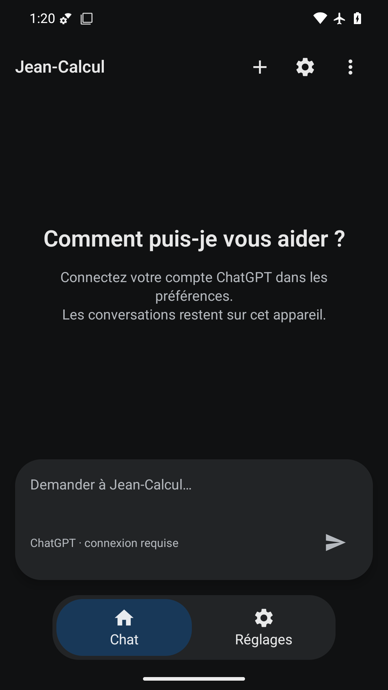
Chat sombre : texte, consigne et statut connexion requise contrastés ; capsule et onglet actif identifiables, insets dégagés.
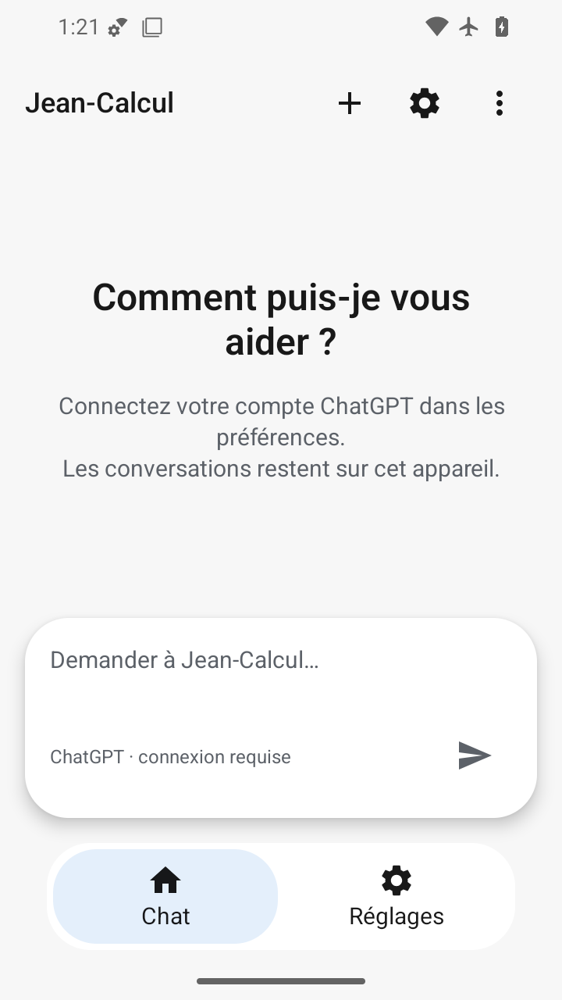
360×640 dp : titre et consigne reviennent à la ligne ; capsule, état de connexion et envoi restent lisibles, navigation visible.
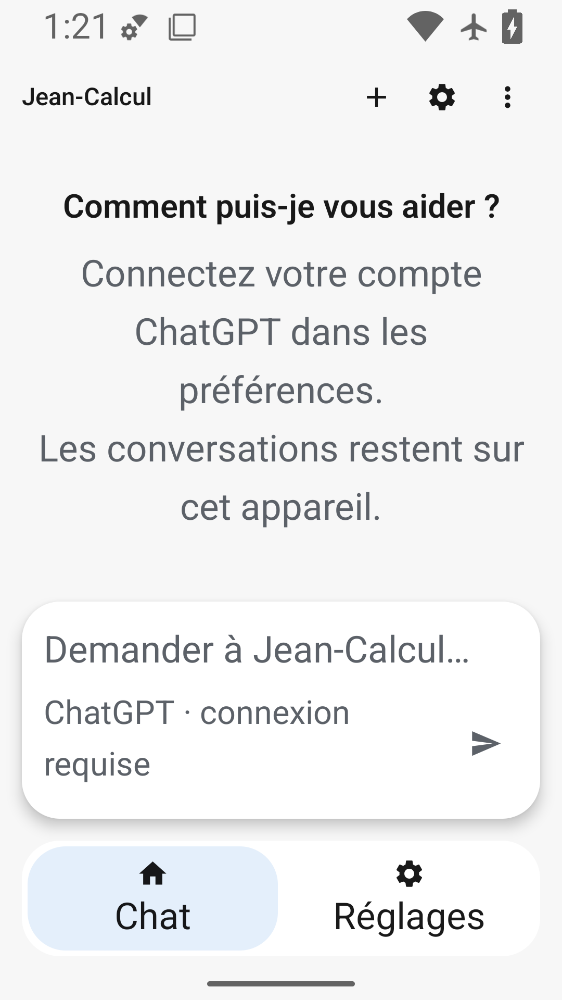
200 % : texte de connexion et état du composeur se réorganisent sur plusieurs lignes sans chevauchement. Titre COUI fixe mais présent ; placeholder abrégé.
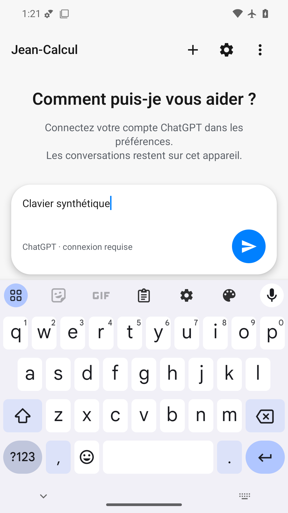
Clavier visible et envoi dégagé au-dessus de l’IME ; brouillon et curseur lisibles. Recadrage inspection/keyboard-header.png ouvert nativement : titre et trois actions présents.
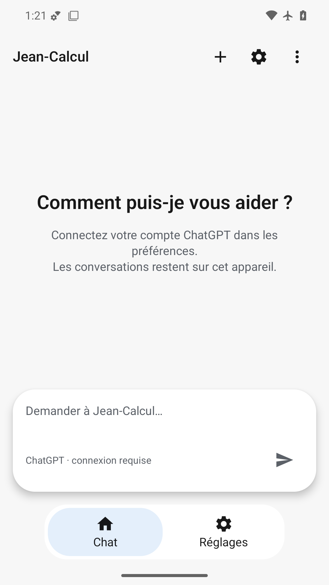
État stable sans animation : hiérarchie accueil/saisie/navigation conservée. Capture ne prouve ni fluidité ni haptique.
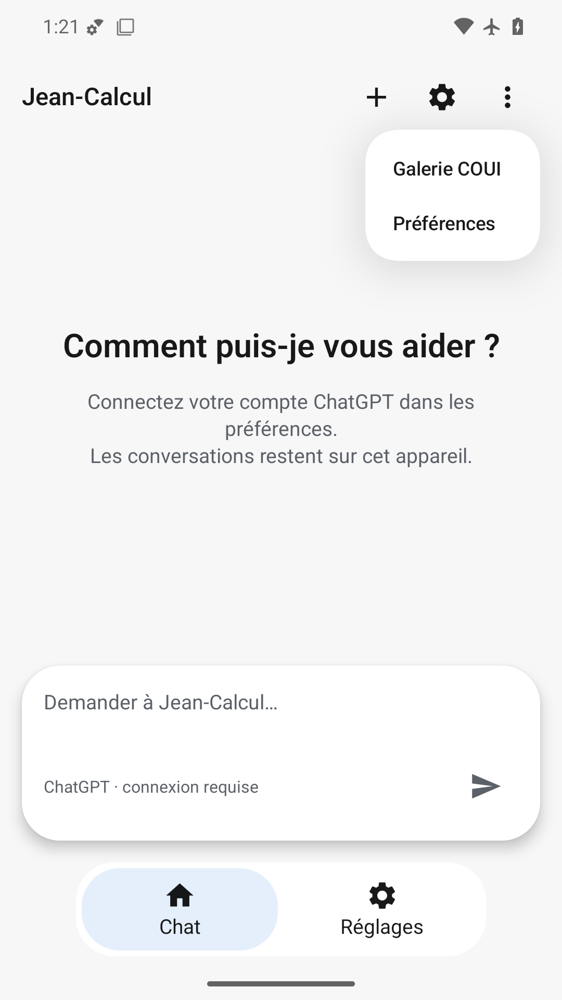
Menu Galerie COUI/Préférences ancré sous les options et lisible, sans masquer le composeur.
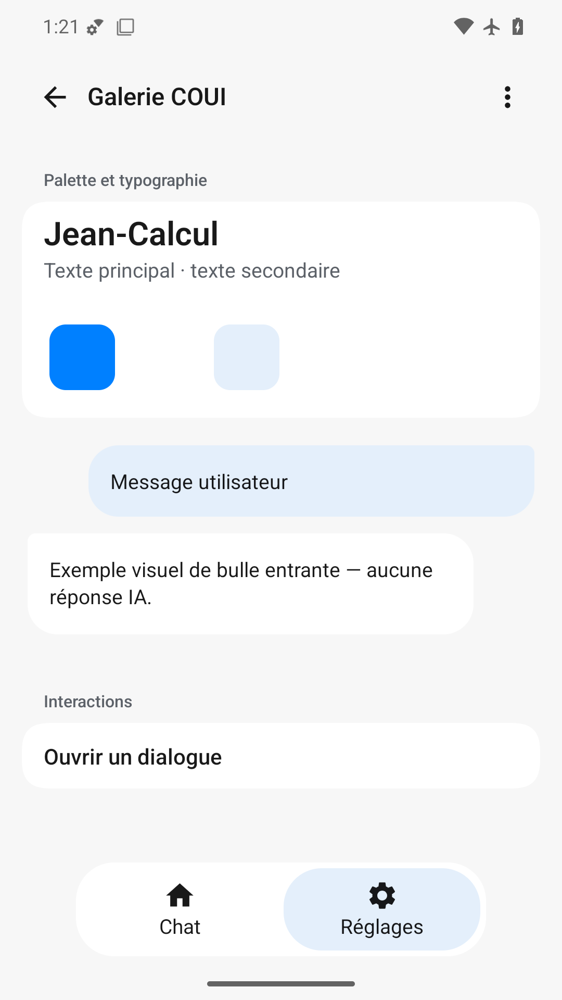
Échantillons de palette, bulles explicitement illustratives et dialogue visibles, sans prétendre à une réponse IA connectée.
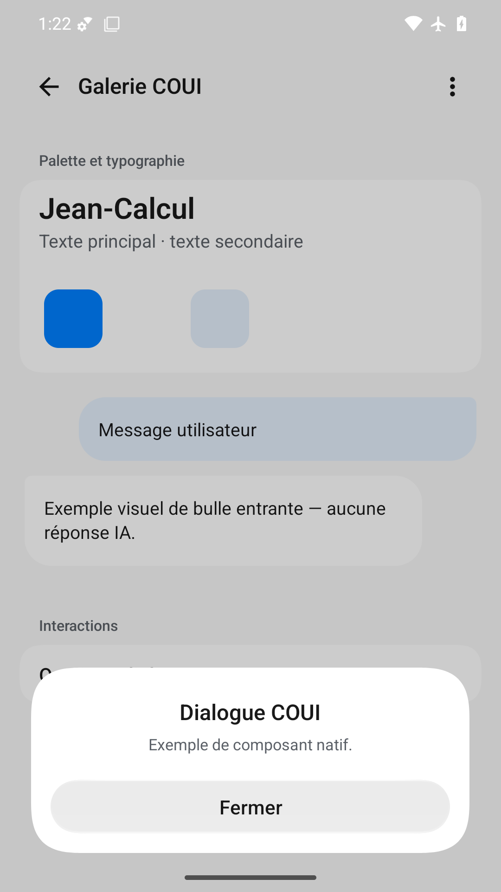
Titre, texte et Fermer dans le dialogue blanc au-dessus du fond assombri ; barre système dégagée.
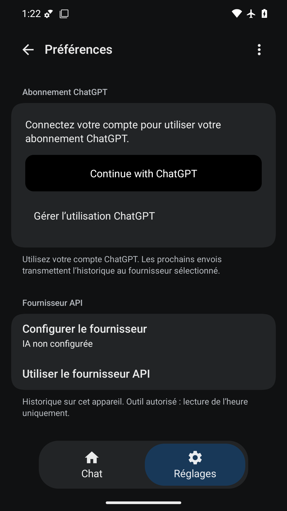
Entrée ChatGPT lisible en sombre : texte blanc sur bouton noir distinct de la carte anthracite ; accès usage et fournisseur API séparés, aucun compte annoncé connecté.
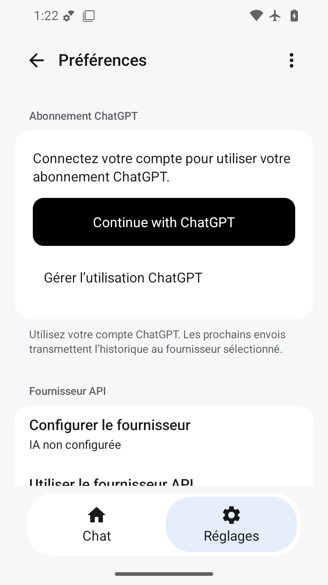
Petit écran : Continue with ChatGPT tient sur une ligne et reste entièrement visible ; consigne et usage lisibles, fournisseur API sous le pli dans la liste défilable.
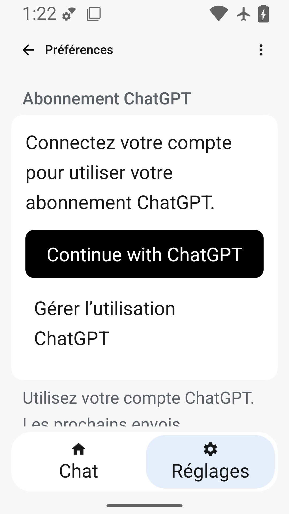
200 % : bouton ChatGPT et accès usage lisibles, la carte grandit avec le texte sans superposer la navigation. Suite du texte et sections plus basses hors viewport.
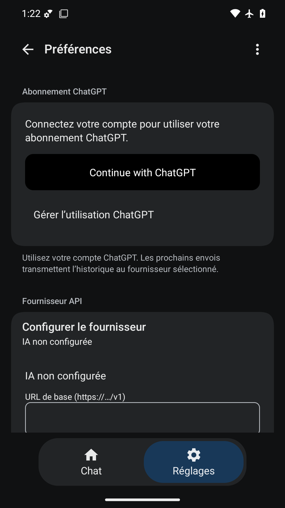
Après défilement, formulaire API ouvert ; libellé URL et contour du champ visibles au bas. Suite sous le pli non validée, entrée ChatGPT conservée au-dessus.
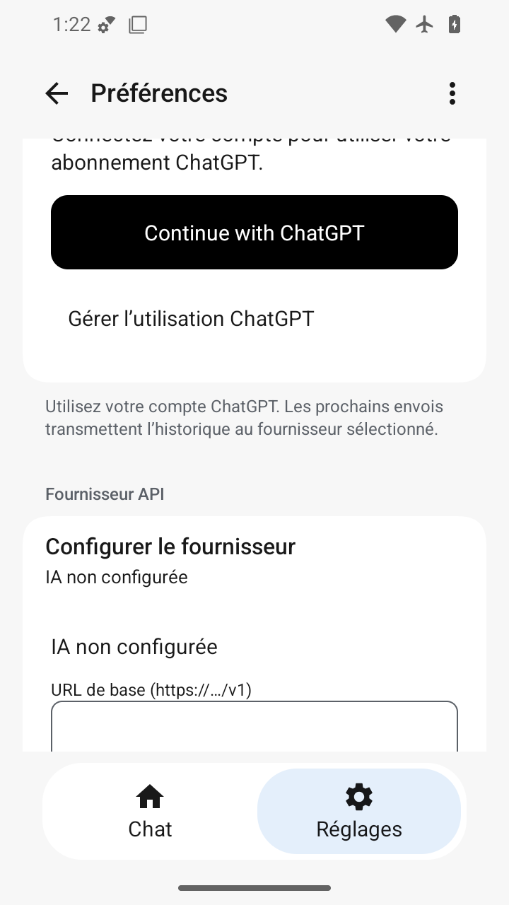
Viewport défilé : champ URL bordé visible partiellement en bas ; son étiquette est lisible. Partie supérieure de la liste hors viewport ; bas du formulaire non inspecté.
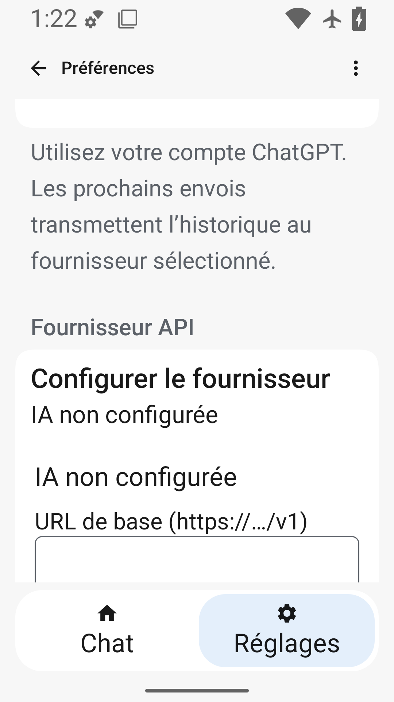
À 200 % après défilement, section API, action Configurer et étiquette URL lisibles, contour de champ identifiable en bas. Le contenu suivant nécessite de défiler ; il n’est pas validé par ce PNG.
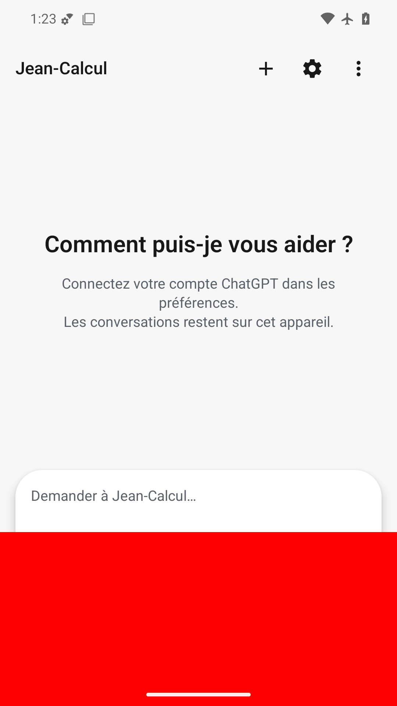
FAIL volontaire : rectangle rouge opaque couvre la zone basse, masque connexion, envoi et navigation ainsi qu’une partie du composeur.